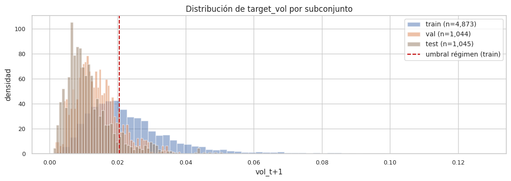

3. Features causales y targets#
Propósito#
Construir las ~30 features causales y los dos targets (target_vol y
target_regime), aplicar el particionamiento temporal 70/15/15,
verificar que las pruebas anti-leakage pasan, y persistir los
conjuntos train, val y test listos para los notebooks de
modelado.
Conexión con el capítulo anterior#
En el capítulo 2 caracterizamos los hechos estilizados de INTC. Aquí codificamos esos hechos en variables predictoras causales y definimos formalmente lo que el modelo debe predecir.
3.1 Carga del dataset limpio#
import sys
from pathlib import Path
PROJECT_ROOT = Path.cwd().parent if Path.cwd().name == "notebooks" else Path.cwd()
sys.path.insert(0, str(PROJECT_ROOT))
import numpy as np
import pandas as pd
from src import config
from src.features import build_features, feature_columns
from src.targets import add_targets
from src.splits import temporal_split, split_summary
from src.io_utils import save_parquet, load_parquet, save_json
df = load_parquet(config.PROCESSED_FILE)
print(f"Dataset cargado: {len(df):,} filas")
df.head()
Dataset cargado: 7,022 filas
| date | open | high | low | close | volume | |
|---|---|---|---|---|---|---|
| 0 | 1990-01-02 | 0.8579 | 0.8982 | 0.8499 | 0.8982 | 79600273 |
| 1 | 1990-01-03 | 0.8982 | 0.9061 | 0.8740 | 0.8740 | 86671242 |
| 2 | 1990-01-04 | 0.8820 | 0.8982 | 0.8579 | 0.8904 | 72928342 |
| 3 | 1990-01-05 | 0.8904 | 0.8982 | 0.8820 | 0.8820 | 46184758 |
| 4 | 1990-01-08 | 0.8904 | 0.9061 | 0.8820 | 0.8982 | 54001929 |
3.2 Construcción de features#
df_feat = build_features(df)
feats = feature_columns(df_feat)
print(f"Features construidas : {len(feats)}")
print()
print("Lista completa:")
for i, c in enumerate(feats, 1):
print(f" {i:2d}. {c}")
Features construidas : 31
Lista completa:
1. ret_lag_1
2. ret_lag_2
3. ret_lag_3
4. ret_lag_5
5. ret_lag_10
6. vol_5
7. vol_10
8. vol_22
9. vol_d
10. vol_w
11. vol_m
12. momentum_5
13. momentum_10
14. momentum_22
15. range_hl
16. true_range
17. atr_14
18. log_volume
19. volume_lag_1
20. log_volume_ma_10
21. volume_ratio
22. sma_10
23. px_dist_sma_10
24. sma_22
25. px_dist_sma_22
26. sma_50
27. px_dist_sma_50
28. skew_22
29. kurt_22
30. dow
31. month
Interpretación. Las ~30 features cubren cinco familias funcionales:
Memoria de retornos (
ret_lag_*,momentum_*): capturan la dinámica autoregresiva de los rendimientos.Memoria de volatilidad (
vol_*,vol_d/w/m): incluyen los componentes HAR-RV de Corsi (2009) — volatilidad diaria, semanal y mensual — que constituirán uno de los benchmarks más fuertes del capítulo 4.Rango y actividad (
range_hl,true_range,atr_14): complementan la volatilidad con información intradiaria.Volumen (
log_volume,volume_ratio,volume_lag_1): capturan sorpresas de actividad relativas al promedio reciente.Precio y momentum técnico (
sma_*,px_dist_sma_*): distancias normalizadas a medias móviles.Forma de la distribución reciente (
skew_22,kurt_22): asimetría y curtosis rolling como proxy de leverage y cola.Calendario (
dow,month): efectos estacionales.
Toda feature respeta causalidad estricta: ninguna usa información de
\(t+1\) en adelante. Esto se verifica formalmente en
tests/test_features_causal.py.
3.3 Construcción de targets#
# Paso 1: construir splits temporales sobre el dataset con features.
# Esto nos da una train_mask que usaremos para calcular el umbral del régimen.
train_raw, val_raw, test_raw = temporal_split(df_feat)
print(split_summary(train_raw, val_raw, test_raw))
subset n_rows date_min date_max
0 train 4915 1990-01-02 2009-07-01
1 val 1053 2009-07-02 2013-09-06
2 test 1054 2013-09-09 2017-11-10
# Paso 2: construir train_mask para evitar leakage en el umbral del régimen.
n = len(df_feat)
train_mask = np.zeros(n, dtype=bool)
train_mask[: len(train_raw)] = True
# Paso 3: añadir targets usando solo train para definir el umbral.
df_all = add_targets(df_feat, horizon=config.HORIZON, train_mask=train_mask)
print(f"Umbral del régimen : {df_all.attrs['regime_threshold']:.6f}")
print(f"Origen del umbral : {df_all.attrs['regime_threshold_source']}")
print(f"Horizonte : {df_all.attrs['regime_horizon']} día(s)")
Umbral del régimen : 0.020474
Origen del umbral : train_quantile
Horizonte : 1 día(s)
Interpretación. El umbral se calcula como la mediana de
target_vol en el conjunto de entrenamiento. La etiqueta
'train_quantile' en regime_threshold_source confirma trazabilidad.
Cualquier otra fuente ('global_quantile_NOT_RECOMMENDED' o 'explicit')
sería una señal de alerta metodológica.
3.4 Filtrado de filas con NaN inducidos por features y targets#
# Las features rolling y el target shift(-h) introducen NaN al principio
# y al final respectivamente. Los eliminamos antes del split definitivo.
df_clean = df_all.dropna(subset=feats + ["target_vol", "target_regime"]).reset_index(drop=True)
print(f"Filas antes del dropna : {len(df_all):,}")
print(f"Filas después : {len(df_clean):,}")
print(f"Diferencia : {len(df_all) - len(df_clean):,}")
Filas antes del dropna : 7,022
Filas después : 6,962
Diferencia : 60
Interpretación. Las primeras ~50 filas se pierden por el burn-in
de las features rolling largas (SMA-50, kurtosis-22, etc.) y la
última fila se pierde porque su target_vol requeriría conocer
el día \(t+1\) que no existe. Esta pérdida es esperable y necesaria.
3.5 Split temporal 70 / 15 / 15#
train, val, test = temporal_split(df_clean)
print(split_summary(train, val, test))
subset n_rows date_min date_max
0 train 4873 1990-03-13 2009-07-13
1 val 1044 2009-07-14 2013-09-18
2 test 1045 2013-09-19 2017-11-09
Interpretación. Las tres particiones son disjuntas y cronológicas.
Cualquier intento futuro de mezclar pasado y futuro sería capturado por
tests/test_splits_temporal.py.
3.6 Distribución del target de regresión por subconjunto#
import matplotlib.pyplot as plt
from src.viz import PALETTE, set_style
set_style()
fig, ax = plt.subplots(figsize=(11, 4))
for subset, color, label in [(train, PALETTE["train"], "train"),
(val, PALETTE["val"], "val"),
(test, PALETTE["test"], "test")]:
ax.hist(subset["target_vol"], bins=60, alpha=0.5, color=color,
label=f"{label} (n={len(subset):,})", density=True)
ax.axvline(df_all.attrs["regime_threshold"], color=PALETTE["secondary"],
linestyle="--", linewidth=1.5, label="umbral régimen (train)")
ax.set_title("Distribución de target_vol por subconjunto")
ax.set_xlabel("vol_t+1")
ax.set_ylabel("densidad")
ax.legend()
plt.tight_layout()
plt.savefig(config.FIGURES_DIR / "03_target_vol_distribution.png", dpi=300, bbox_inches="tight")
plt.show()

Interpretación. Las distribuciones de target_vol se solapan
parcialmente entre train, val y test, pero hay desplazamientos
visibles — particularmente en test, donde períodos recientes de
volatilidad atípica pueden producir colas distintas. Este covariate
shift moderado es esperable en finanzas y es exactamente la razón
por la que evaluamos en test solo al final, para que la decisión de
modelo no se sobreajuste a esas particularidades.
3.7 Balance de clases en target_regime#
for name, subset in [("train", train), ("val", val), ("test", test)]:
counts = subset["target_regime"].value_counts().sort_index()
p_pos = counts.get(1, 0) / counts.sum()
print(f"{name:5s} : 0={counts.get(0,0):>5d} 1={counts.get(1,0):>5d} "
f"P(régimen alto)={p_pos:.3f}")
train : 0= 2434 1= 2439 P(régimen alto)=0.501
val : 0= 904 1= 140 P(régimen alto)=0.134
test : 0= 936 1= 109 P(régimen alto)=0.104
Interpretación. Por construcción del umbral (mediana de train), el conjunto de entrenamiento está casi perfectamente balanceado al 50/50. Val y test pueden alejarse del balance — esto es información útil: indica si el régimen «alto» se ha vuelto más o menos común con el tiempo. Es uno de los hallazgos que el capítulo 7 (balanceo de clases) explotará explícitamente para evaluar si SMOTE/ADASYN aportan algo en este problema.
3.8 Persistencia de splits para los notebooks de modelado#
# Guardar features.parquet (todo el dataset con features+targets)
save_parquet(df_clean, config.FEATURES_FILE)
# Guardar splits separados — los notebooks de modelado leen estos archivos.
save_parquet(train, config.PROCESSED_DIR / "train.parquet")
save_parquet(val, config.PROCESSED_DIR / "val.parquet")
save_parquet(test, config.PROCESSED_DIR / "test.parquet")
# Guardar lista de features y umbral del régimen para trazabilidad.
save_json({
"feature_columns": feats,
"regime_threshold": float(df_all.attrs["regime_threshold"]),
"regime_threshold_source": df_all.attrs["regime_threshold_source"],
"horizon": config.HORIZON,
"vol_window": config.VOL_WINDOW,
"train_size": len(train),
"val_size": len(val),
"test_size": len(test),
}, config.PROCESSED_DIR / "metadata.json")
print("Archivos persistidos:")
for f in sorted(config.PROCESSED_DIR.glob("*")):
if f.is_file():
print(f" {f.name} ({f.stat().st_size/1024:.1f} KB)")
Archivos persistidos:
.gitkeep (0.0 KB)
features.parquet (2299.7 KB)
intc_clean.parquet (234.4 KB)
metadata.json (0.7 KB)
test.parquet (368.1 KB)
train.parquet (1609.4 KB)
val.parquet (364.8 KB)
3.9 Verificación final con tests anti-leakage#
# Re-ejecutamos los tests desde el notebook para evidencia visible.
import subprocess
result = subprocess.run(
["python", "-m", "pytest", "tests/", "-v", "--tb=short"],
cwd=str(PROJECT_ROOT), capture_output=True, text=True
)
print(result.stdout[-2000:] if len(result.stdout) > 2000 else result.stdout)
if result.returncode != 0:
print("STDERR:", result.stderr[-500:])
============================= test session starts ==============================
platform linux -- Python 3.12.3, pytest-9.0.3, pluggy-1.6.0 -- /usr/bin/python
cachedir: .pytest_cache
rootdir: /home/claude/INTC-Vol-ML
plugins: anyio-4.13.0
collecting ... collected 13 items
tests/test_features_causal.py::test_features_no_future_info PASSED [ 7%]
tests/test_features_causal.py::test_no_target_columns_in_features PASSED [ 15%]
tests/test_features_causal.py::test_features_present PASSED [ 23%]
tests/test_pipelines.py::test_regression_pipeline_runs PASSED [ 30%]
tests/test_pipelines.py::test_classification_pipeline_runs PASSED [ 38%]
tests/test_splits_temporal.py::test_temporal_split_no_overlap PASSED [ 46%]
tests/test_splits_temporal.py::test_temporal_split_fractions PASSED [ 53%]
tests/test_splits_temporal.py::test_temporal_split_disjoint PASSED [ 61%]
tests/test_splits_temporal.py::test_tscv_no_shuffle PASSED [ 69%]
tests/test_targets_no_leakage.py::test_target_is_future_value PASSED [ 76%]
tests/test_targets_no_leakage.py::test_no_target_in_features PASSED [ 84%]
tests/test_targets_no_leakage.py::test_regime_threshold_from_train_only PASSED [ 92%]
tests/test_targets_no_leakage.py::test_regime_threshold_source_is_traceable PASSED [100%]
============================== 13 passed in 1.45s ==============================
3.10 Cierre del capítulo y conexión con el capítulo 4#
Tenemos: features causales verificadas, targets sin leakage, splits cronológicos disjuntos y archivos persistidos. La base está blindada.
En el capítulo 4 ejecutamos los benchmarks econométricos:
Naive (último valor)
Rolling mean
EWMA (RiskMetrics, J.P. Morgan 1996)
ARIMA (Box-Jenkins)
GARCH(1,1) ([Bollerslev, 1986])
HAR-RV ([Corsi, 2009]) — el estándar de oro contemporáneo para volatilidad realizada
Estos benchmarks marcan la barra que cualquier modelo ML deberá superar para ser declarado mejor.